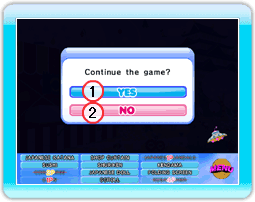

11 |
Pantalla de misión |
 |
|
Pantalla de misión

1: Nombres de los objetos Aquí hay una lista de los objetos que debes encontrar. Cuando encuentres uno, automáticamente se tachará de la lista. Puedes aumentar el tamaño del texto del nombre de un objeto al situar el cursor sobre el texto. 2: MISS Si cometes un error y pulsas el Botón A donde no hay ningún objeto recibirás una penalización de cinco segundos. Si juegas con otro o con más personas, un fallo interrumpirá el control del cursor. 3: Botón MENU Pulsa este botón para que aparezca la ventana del menú. Ventana del MENU Alinea el cursor encima de una de los siguientes encabezamientos y pulsa el Botón A para seleccionar.  1: YES Vuelve a jugar la misión. 2: NO Vuelve a la pantalla de introducción. HINTS Al jugar una misión y después de que pase un minuto, aparecerá una pista automáticamente para que puedas encontrar un objeto. Antes de que aparezca la pista sonará brevemente un sonido. Después de la primera pista, cada 30 segundos aparecerá otra. |
 |
 |
 |